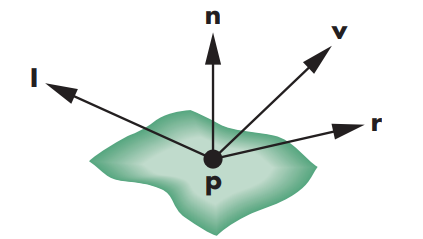
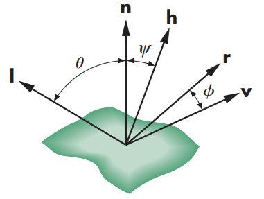
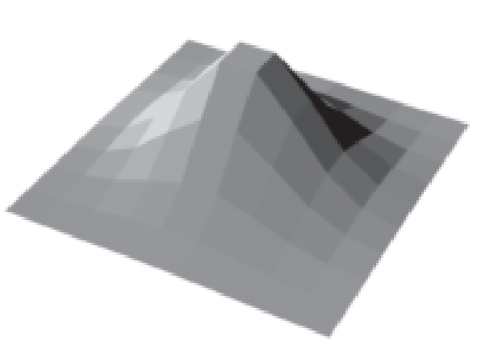
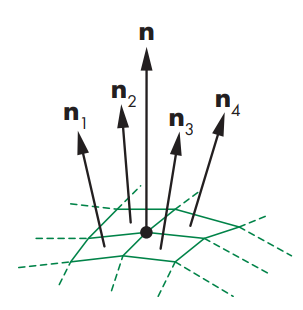

人们常说，夜晚的星斗是天堂里幸福的象征；你的眼睛照彻我的心灵。
# Phong 光照模型
首先，我们要考虑光照模型是在做什么：给定一个光源，物体表面的一个点，一个观测者，我们需要一个模型去计算那个点在观察者眼中的颜色。
注意，所谓的光强、看起来亮、暗本质上都是因为颜色和颜色的对比产生的结果。所以光照模型也是在计算物体表面各个点的颜色。
# 光源的刻画
Phong 光照模型认为，光源与物体表面有三种相互作用：Specular (镜面反设)、Ambient (环境光)、Diffuse (漫反射)。
当然这只是对现实世界的一个建模，并没有什么办法推导出确实光与物体就是这样作用的。
然后我们认定有一个理想点光源，即它向所有方向都均匀地发出相同的光。Phong 模型用一个 的矩阵去描述这个光源：
其中， 表示该光源的环境光 (ambient) 的红色 (red) 强度为多少。同理，对于三种作用和三种颜色，我们一共有 9 个数去刻画这个光源。
你可能很奇怪，想象中好像漫反射或者环境光和光源没什么关系，我们是否就应该用一组 值描述光源颜色就足够了，而环境光、漫反射应该根据环境参数决定。我认为是这样的，只不过所有的和光有关的环境因素，在这里都被整合统称为光源了。也就是说我们不用考虑白天、黄昏之类的因素，它们都在光源矩阵 里了。
# 物体、观察者、光源的相互作用
关于物体表面上的某一个点，Phong 模型认为需要四个向量（都是单位化了的，所以需要的信息是方向）来计算它在光照下的颜色：

-
是物体表面上的这个点指向光源的向量。
-
是物体表面在这个点的法向量。
-
是物体表面这个点指向观察者的向量。
-
是从光源射来的光，完美反射后的出射光方向。也就是说， 共面，且 平分了 的夹角。
然后我们来分别考虑三种作用对这个点的光照颜色的贡献。
-
对于环境光，Phong 模型认为它不受光源位置、观测者位置的影响，即处处相等的。所以我们只需要加它加一个权重，最后加到最终光照颜色中即可：。
-
对于漫反射，Phong 模型认为，之所以正午我们感觉光强，黄昏感觉光弱，其实是因为光线是否垂直地照射到表面并被反射出来。即漫反射光的强度正相关于光线和物体表面的夹角。光线越是垂直地射到表面，漫反射光越强。基于此，Phong 模型刻画漫反射光为：
其中， 是光源到物体表面点的距离。我们认为光强随着距离会减小，减小的速度就是除以一个二次函数。
上式中，很显然 越大，说明光线越贴近法向量，即入射光越垂直于平面。上式中， 均为参数可以用来柔化光照。
-
对于镜面反设，Phong 模型认为，就像我们玩尺子反射光，当反射的光斑找到人眼睛时就会感到刺眼。因此这部分的光强取决于反射光方向 和观测者方向 的接近程度。若 和 共线，则说明反射光正好进入观测者眼睛，此时镜面反射光强最大。类似漫反射，Phong 模型刻画为：
不同的是，如果 时，说明反射光完全背对着观测者而去了，我们就认为这完全没有任何贡献。此外，除去参数，还有参数，它反映了光照的 shininess。当 较大时，很显然只有 接近于 1，也就是反射光和观测者方向非常接近，才会有显著的非零值，否则 (<1) 的数高次幂后就接近于 0 了。故 实际上起到了 “聚光” 的效果。
故最后 Phong 模型认为的光照强度公式为：
# Blinn Phong 光照模型
Blinn-Phong 模型实际上就是为了简便一点 Phong 模型的计算量。
很显然，Phong 模型中，知道了 实际上是可以计算出 的，但这个计算可能比较麻烦。注意到我们最后需要的值是 和 的夹角 的 值，而 又是 的中间向量，所以我们考虑构造一个，它是 的中间向量，这样 的夹角，就是二倍的 的夹角：

我们有：
因此，可以修改 Phong 模型的结果为：
注意只改动了镜面反射 Specular 部分。而指数是我们选择 的值，去接近原 Phong 模型中的反射光部分。
# 关于 Flat，Gouraud，Phong Shading
-
假设每个面都是平的，即面上所有点的法向量 都是常数，那么若 我们也假设是常量的话，显然此时同一个面会都成了一个颜色，这就是 Flat shading。它假设了光源就是平行光，而且观察者也是正投影观察。此时对于每个面我们只需要计算一次光照就行了。

-
若一个模型表面不是连续可微的，就像现实中的模型大多都是三角面片拼接而成。此时对于每个顶点，我们就认为它的法向量就是所有与他相关联的面的法向量的平均值：

对于 Gouraud shading，我们像这样计算出每个顶点的法向量，然后计算它的光照颜色，然后对于面内部的点，它们的光照颜色就是根据顶点的颜色插值而成。很显然，Gouraud shading 中，一个面内最亮的和最暗的点，必然都是顶点，其余的点颜色因为是对顶点颜色插值而成，故都介于此之间。
-
而 Phong shading 就不是对顶点颜色插值，而是对顶点的法向量插值。即面内每个点的法向量都可以由顶点的法向量插值而成，再依此去计算面内点的颜色。故此时最亮的点可能是在面内了。